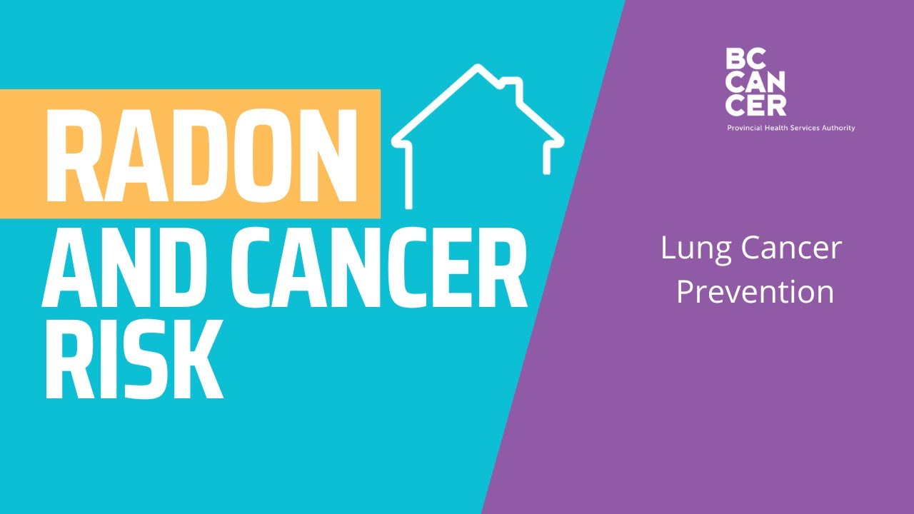
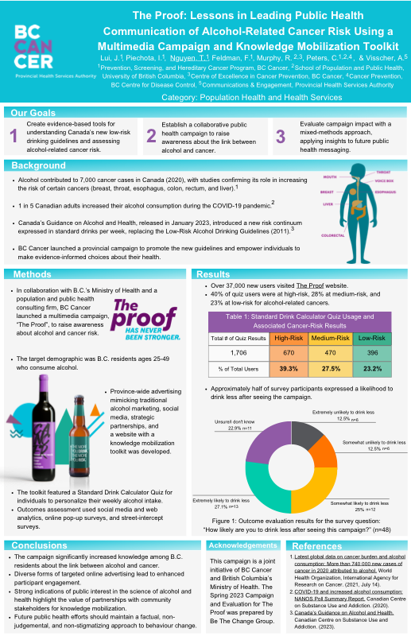

Public Health Communication
Cervix Self-Screening
Launched in January 2024, BC Cancer leads the province's new HPV-based cervix self-screening program, which aims to expand access and improve equity for cervical cancer screening through patient-collected testing. Our organization oversees policies, standards, follow-up pathways, recall, promotion, and program performance monitoring.
Notably, I have led a community partnership program, conducting over 100 workshops on cancer screening across BC, including staffing the distribution of cervix self-screening kits in community, and developing a protocol.
As part of the program launch team, I developed two public-facing knowledge translation videos to increase awareness and encourage uptake of the new screening pathway.

Radon
I led the creation of an animated video explaining radon and cancer risk, and co-produced a radon detector tutorial for social media, to raise public awareness of radon and cancer risk.

The Proof: Alcohol Campaign
This was a provincial multimedia campaign launched in partnership with BC's Ministry of Health to increase awareness of alcohol-related cancer risk. Notably, I led the production of an animated video on alcohol and cancer risk as a key asset in the campaign.